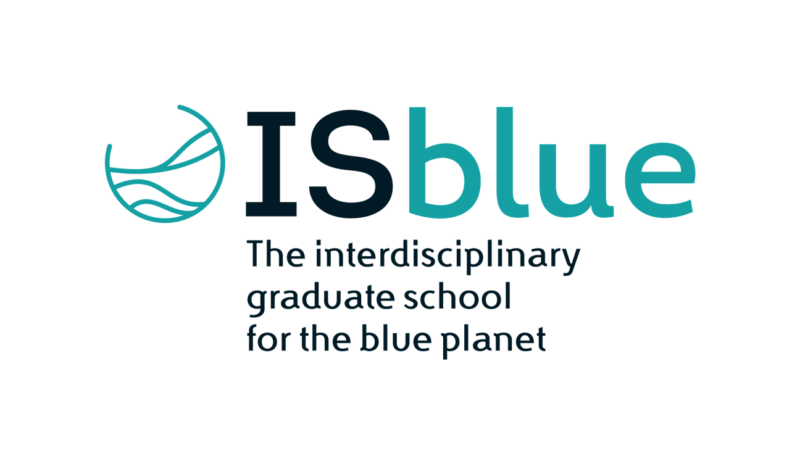
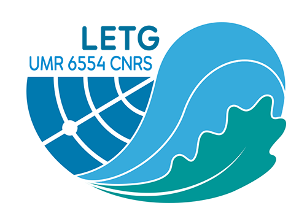

Répertoire des visualisations
Analyse du réseau portuaire de la Caraïbe en 2019
Ce répertoire intègre les visualisations des données créees dans le cadre du projet TRAFIC et s'inscrit dans les travaux de l'Observatoire Homme - Milieu Littoral Caraïbes (OHM-LC). S'appuyant sur la base de donnée AIS des trajectoires maritimes dans les Caraïbes.